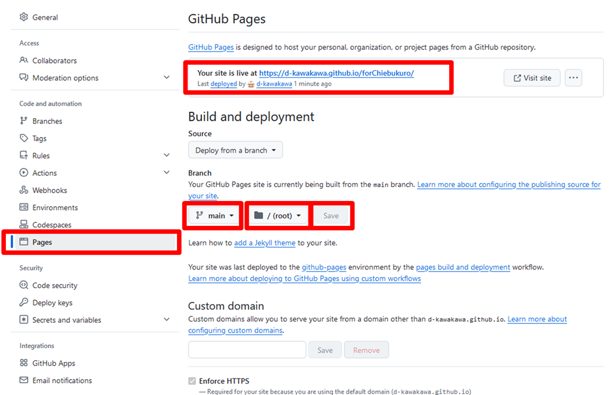

知恵袋向けテストページ
お伝えしたサイトでは、「・公開が完了すると、https://user.github.io/testRepository/のようなURLが画面上に表示されます。表示されたURLから、自分が作成したWebページを確認できます。」
と記載されていますが、画像での図示がありません。なので代わりに図示します。

注意点：
- ページを編集して、右上の緑色の「Commit changes...」ボタンを押した後、30秒経ってからページに反映されていました。
また、公開が完了すると URL が表示されますが、その時も 30秒待つ必要があるのかも…
- オープンとは、URLだけを受け取って、特別なことをしないでもそのサイトを閲覧できることだと思います。